UC Berkeley CS 280A · Computer Vision and Computational Photography
Project 2
Fun with Filters and Frequencies
Avery Lee · September 29, 2026
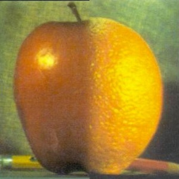
The Oraple
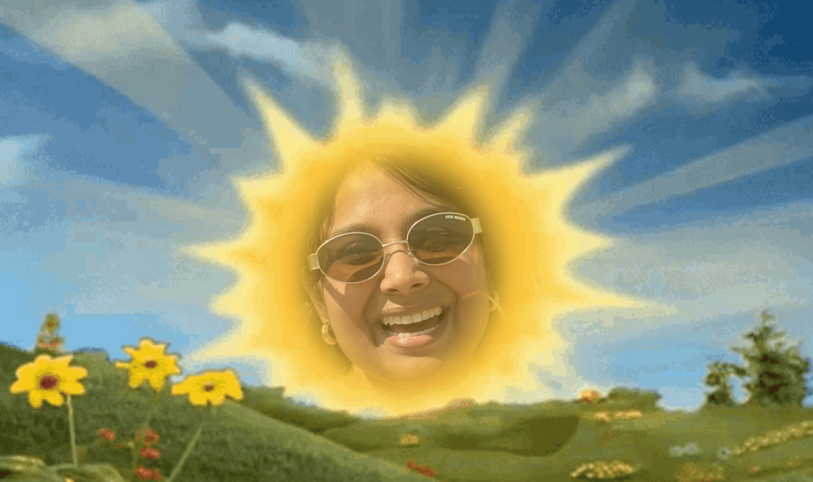
My friend as the Teletubbies Sun
This project uses 2D convolution to find edges, sharpen images, make hybrid images that change with viewing distance, and blend two images across a seam using Gaussian and Laplacian stacks. Every result is available here.
Part 1Fun with Filters
Part 1.1Convolutions from Scratch
def convolutions_from_scratch(image, kernel, padding='same', for_loops=4):
h, w = image.shape
# flip kernel x and y axis
kernel = kernel[::-1, ::-1]
kh, kw = kernel.shape
# pad the image with 0's based on padding typeif padding == 'same':
# output size = h x w
h_pad, w_pad = kh // 2, kw // 2
output = np.zeros((h, w))
elif padding == 'full':
# output size = (h+kh-1) x (w+kw-1)
h_pad, w_pad = kh-1, kw-1
output = np.zeros((h+kh-1, w+kw-1))
else:
raise ValueError(f'The padding parameter should be "same" or "full".')
image = np.pad(image, ((h_pad, h_pad), (w_pad, w_pad)))
h_iter, w_iter = image.shape
h_iter, w_iter = h_iter-kh+1, w_iter-kw+1
# convolution calculationif for_loops == 4:
for i in range(h_iter):
for j in range(w_iter):
total = 0.0
for row in range(kh):
for col in range(kw):
total += image[i+row, j+col] * kernel[row, col]
output[i, j] = total
elif for_loops == 2:
for i in range(h_iter):
for j in range(w_iter):
patch = image[i:i+kh, j:j+kw]
output[i, j] = np.sum(patch * kernel)
else:
raise ValueError(f'The for_loops parameter should be 4 or 2.')
return output
A convolution slides a flipped \(k_h \times k_w\) kernel \(k\) over an \(h \times w\) image \(I\) and takes a weighted sum at every position.
My implementation first flips the kernel along both axes, then pads the image with zeros, then takes the weighted sum of the patch under the kernel at every output position. It supports two padding modes:
same pads \(k_h \mathbin{//} 2\) rows and \(k_w \mathbin{//} 2\) columns on each side, so the output is the same size as the input, \(h \times w\).
full pads \(k_h - 1\) rows and \(k_w - 1\) columns on each side, so every position where the kernel overlaps at least one pixel is kept, and the output size is \((h + k_h - 1) \times (w + k_w - 1)\).
The four-loop version loops over output rows and columns, then over kernel rows and columns, and adds one product at a time. The two-loop version loops over output positions only. At each position it takes the image patch under the kernel and computes the weighted sum with one NumPy multiply and sum.
Correctness. I checked my implementation against scipy.signal.convolve2d on a 5×5 test array with the values 0 to 24, using the finite difference operators \(D_x\) and \(D_y\):
Both the four-loop and two-loop versions match convolve2d exactly for both kernels in both same and full mode.
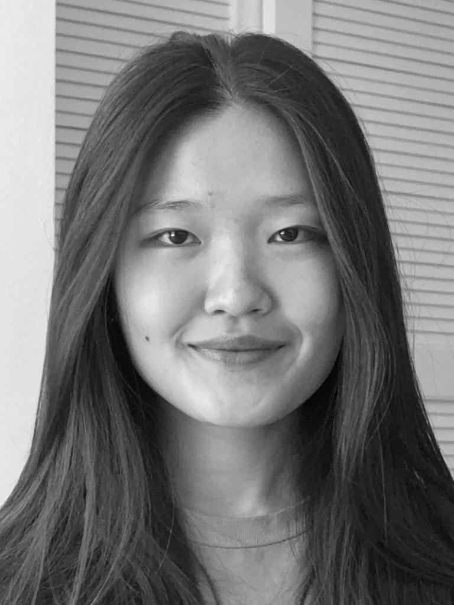
Original \(I\) Grayscale, 1024×768 px\(I * B\) same mode, 1024×768 px
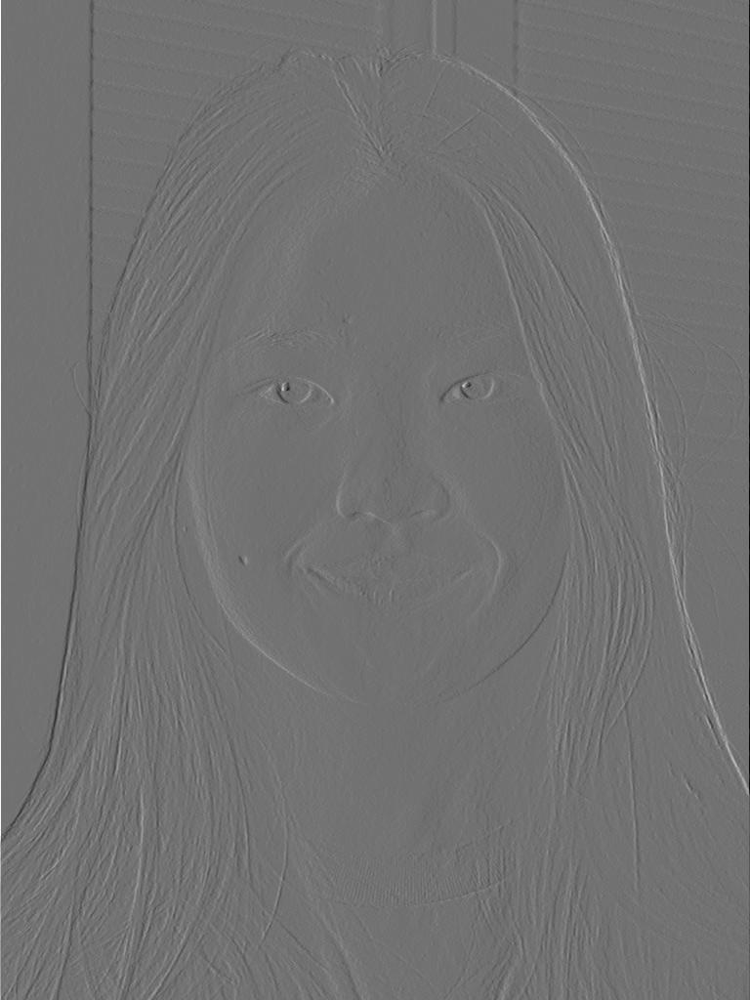
\(I * D_x\) same mode, 1024×768 px
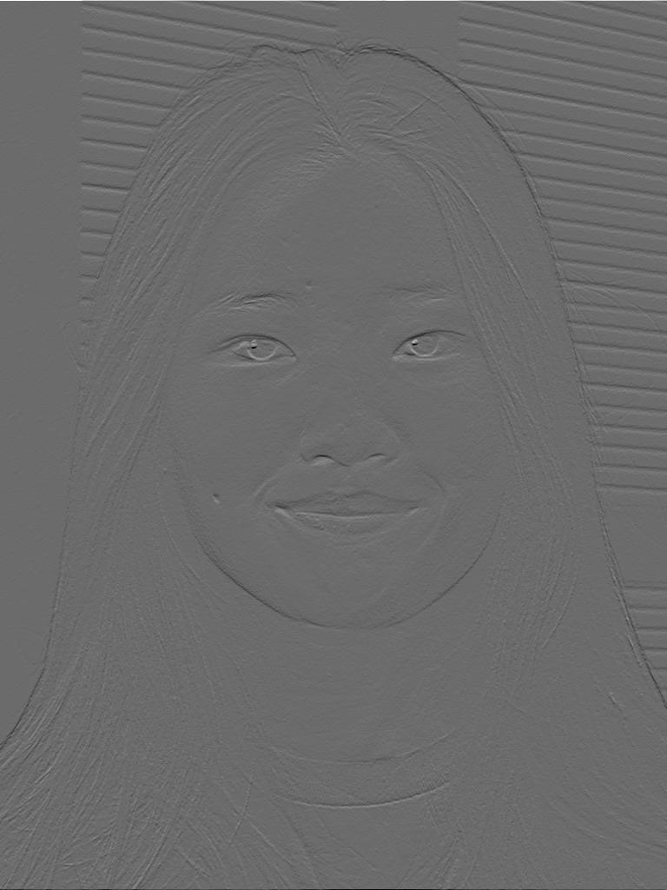
\(I * D_y\) same mode, 1024×768 px
\(I * D_x\) and \(I * D_y\) are rescaled for display: flat regions (zero) are gray, positive responses are lighter, and negative responses are darker.
I tested my two-loop implementation in same mode on a photo of myself, read as grayscale, with three kernels: a 9×9 box filter \(B\) and the finite difference operators \(D_x\) and \(D_y\) from above:
\(B\) averages each pixel with its 9×9 neighborhood, which blurs the image. \(D_x\) responds to vertical edges, such as the sides of the face and the hair. \(D_y\) responds to horizontal edges, such as the eyes, the mouth, and the sliding door in the background.
Runtime. I timed the box filter \(B\) on my photo in same mode:
Method
Time
Four loops
22.69 s
Two loops
2.98 s
scipy.signal.convolve2d
0.12 s
The two-loop version is about 7.6 times faster than the four-loop version, because the 81 multiply-adds at each pixel run inside NumPy's compiled code instead of the Python interpreter. convolve2d runs the whole convolution in compiled code and is another 24 times faster, about 180 times faster than four loops.
Boundaries. My version pads with zeros, and convolve2d also fills with zeros by default (boundary='fill', fillvalue=0), so both handle the border the same way. Zero padding treats everything outside the image as black, which shows up in the results:
\(I * B\) has a dark frame. Near the border, part of the 9×9 window covers padded zeros, which pulls the average down.
\(I * D_x\) has a white line down the left edge and a black line down the right edge, because \(D_x\) treats the jump between the image and the zero padding as an edge.
\(I * D_y\) has a white line along the top edge and a black line along the bottom edge, because \(D_y\) treats the jump between the image and the zero padding as an edge.
Part 1.2Finite Difference Operator
Original \(I\) 542×540 px
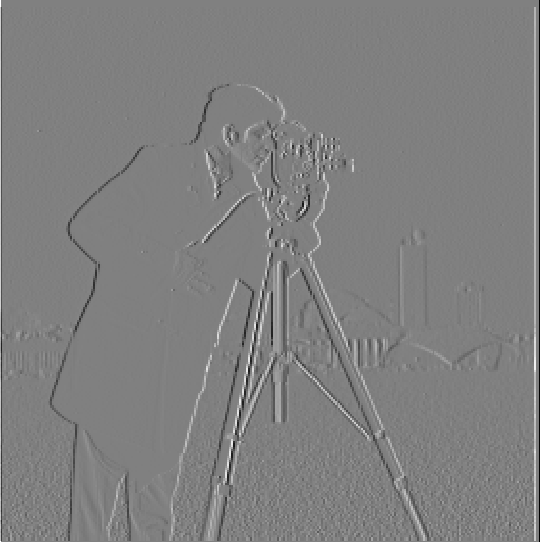
\(I * D_x\) same mode, 542×540 px
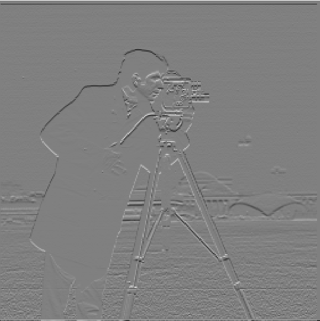
\(I * D_y\) same mode, 542×540 px
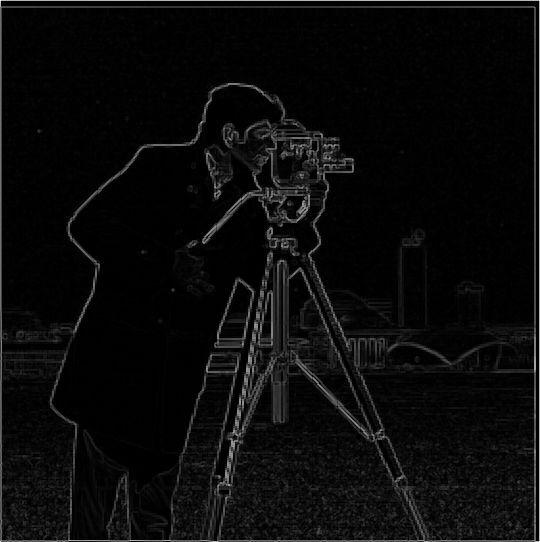
Gradient magnitude 542×540 px
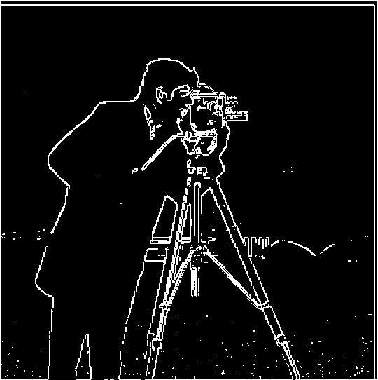
Binarized edges \(\lVert \nabla I \rVert > 0.25\), 542×540 px
\(I * D_x\) and \(I * D_y\) are rescaled for display: flat regions (zero) are gray, positive responses are lighter, and negative responses are darker.
I convolved the cameraman image with the finite difference operators \(D_x\) and \(D_y\) from Part 1.1 using convolve2d in same mode, which gives the partial derivatives in \(x\) and \(y\). The gradient magnitude combines the two:
$$\lVert \nabla I \rVert = \sqrt{\left(\frac{\partial I}{\partial x}\right)^2 + \left(\frac{\partial I}{\partial y}\right)^2} = \sqrt{(I * D_x)^2 + (I * D_y)^2}$$
To make an edge image, I kept the pixels whose gradient magnitude is above a threshold. I tried thresholds from 0.15 to 0.35 and chose 0.25.
With a small threshold, the grass at the bottom of the image fills with speckles, because the finite difference responds to the grass texture and to noise.
With a high threshold, the buildings in the background and parts of the thin tripod legs start to break apart.
At 0.25, the outlines of the man, the camera, and the tripod stay connected and most of the grass is removed. I accepted some speckle in the grass in exchange for keeping the background buildings.
Borders. The original image has white borders of varying sizes on each side. This gives two frames in the edge image. The outer frame is the jump from the white border to the zero padding, as in Boundaries in Part 1.1. The inner frame is the jump from the white border to the photo.
Part 1.3Derivative of Gaussian (DoG) Filter
Original \(I\), 542×540 px
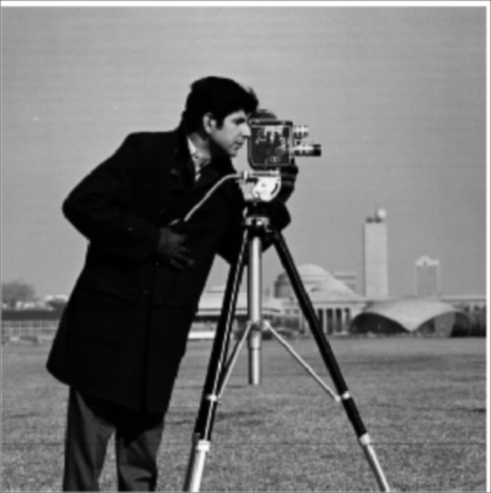
Blurred \(I * G\), same mode, 542×540 px
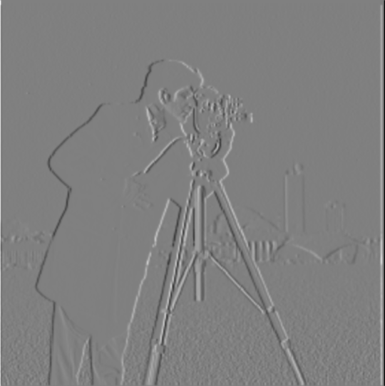
Blurred, then \(x\) derivative \((I * G) * D_x\), same mode, 542×540 px
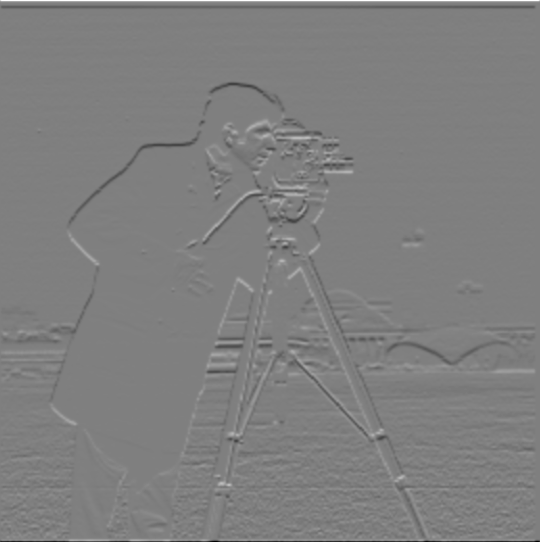
Blurred, then \(y\) derivative \((I * G) * D_y\), same mode, 542×540 px
Gradient magnitude \(\lVert \nabla (I * G) \rVert\), 542×540 px
The derivative images are rescaled for display: flat regions (zero) are gray, positive responses are lighter, and negative responses are darker.
Two convolutions: blur, then differentiate
The finite difference results are noisy because \(D_x\) and \(D_y\) respond to every small change in intensity. Blurring first removes those high frequencies before the derivative is taken. I built a 7×7 Gaussian with \(\sigma = 1\) by taking the outer product of the 1D kernel from cv2.getGaussianKernel(7, 1) with itself:
$$G = g\, g^{\mathsf{T}}, \qquad g = \texttt{getGaussianKernel}(7,\ 1)$$
I blurred the cameraman with \(G\), then repeated Part 1.2 on the blurred image: I computed its gradient magnitude \(\lVert \nabla (I * G) \rVert\) and thresholded it at 0.15.
Differences from Part 1.2. The speckle in the grass is almost gone, and the edges are smoother and more continuous, for example along the coat and the tripod legs. The edges are also thicker, because the blur spreads each edge over several pixels. Spreading each edge out also lowers its peak gradient magnitude, so I lowered the threshold from 0.25 to 0.15.
The derivative images are rescaled for display: flat regions (zero) are gray, positive responses are lighter, and negative responses are darker.
One convolution: derivative of Gaussian filters
Convolution is associative, so the blur and the derivative can be combined into one filter before touching the image:
$$(I * G) * D_x = I * (G * D_x)$$
$$(I * G) * D_y = I * (G * D_y)$$
Convolving \(G\) with \(D_x\) and \(D_y\) in full mode gives the two DoG filters. Each one is a smoothed derivative: positive on one side, negative on the other, and zero through the middle. Applying them to the image takes one convolution per direction instead of two.
Finite difference Part 1.2, \(\lVert \nabla I \rVert > 0.25\)Blurred, then derivatives \(\lVert \nabla (I * G) \rVert > 0.15\)DoG filters \(\lVert \nabla (I * G) \rVert > 0.15\)
Comparison and verification
With the same threshold, the DoG edge image matches the two-convolution edge image. I left the outermost one-pixel border out of the comparison. In the two-convolution version the blurred image is cropped to the input size before \(D_x\) and \(D_y\) are applied, so at the border they see zero padding instead of the blurred values just outside the image.
Both Gaussian versions are much cleaner than the finite difference result.
Part 1 · Bells and WhistlesGradient Orientation
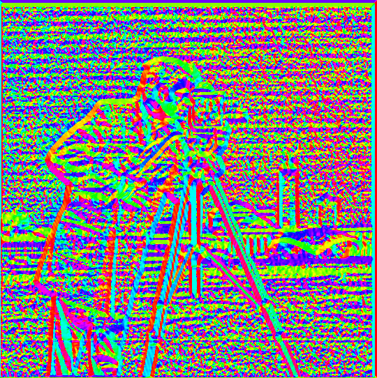
Orientation only \(\theta\), hsv colormap, 542×540 px
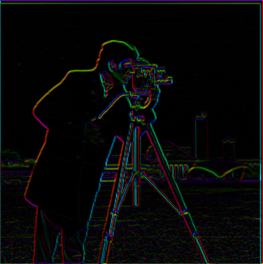
Orientation and magnitude \(H\), \(S\), \(V\), 542×540 px
I used the DoG derivatives from Part 1.3, which are the derivatives of the blurred image \(I * G\):
$$I_x = I * (G * D_x), \qquad I_y = I * (G * D_y)$$
The gradient at each pixel is the vector \((I_x, I_y)\). Its orientation is the angle of that vector, which I computed with np.arctan2. The angle ranges from \(-\pi\) to \(\pi\), so I rescaled it to \([0, 1]\) and used it as the hue:
$$\theta = \operatorname{arctan2}(I_y,\, I_x), \qquad H = \frac{\theta + \pi}{2\pi}$$
$$S = 1, \qquad V = \frac{\lVert \nabla (I * G) \rVert}{\max \lVert \nabla (I * G) \rVert}$$
Hue is cyclic, so \(-\pi\) and \(\pi\) get the same color, which matches the fact that they are the same direction. I then converted each HSV pixel to RGB for display.
The first image shows orientation alone with matplotlib's cyclic hsv colormap. In flat regions the gradient is close to zero and its direction is mostly noise, so the whole image is covered in color.
The second image keeps orientation as hue but sets the value to the normalized gradient magnitude, so only real edges are bright.
Opposite sides of a thin structure, such as the two edges of a tripod leg, get opposite hues, because the intensity rises across one edge and falls across the other.
Part 2Fun with Frequencies
Part 2.1Image Sharpening
Original \(I\)Blurred \(I * G\), 7×7 Gaussian, \(\sigma = 1\)
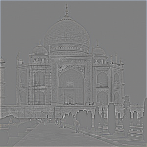
High frequencies \(I - I * G\), shifted by 0.5 so zero is gray
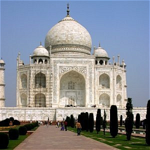
Sharpened \(\alpha = 0.5\)
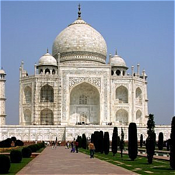
Sharpened \(\alpha = 1\)
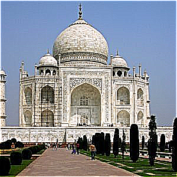
Sharpened \(\alpha = 5\)
A Gaussian filter is a low-pass filter: it keeps the low frequencies and removes the high ones. Subtracting the blurred image from the original leaves only the high frequencies, such as the edges and fine texture. An image looks sharper when its high frequencies are stronger, so the unsharp mask adds a scaled copy of them back:
$$I_{\text{sharp}} = I + \alpha \,\big(I - I * G\big)$$
This can be written as a single convolution. Writing \(I\) as \(I * \delta\), where \(\delta\) is the unit impulse (1 at the center, 0 elsewhere):
so the unsharp mask filter is \((1 + \alpha)\,\delta - \alpha G\). I used a 7×7 Gaussian with \(\sigma = 1\), applied the filter to each color channel, and tried \(\alpha = 0.5, 1, 5\) on the Taj Mahal.
Varying \(\alpha\). A larger \(\alpha\) makes edges crisper, but too large an \(\alpha\) overshoots. At \(\alpha = 5\), bright and dark halos appear along the edges, the sky turns grainy because noise is also high frequency, and the contrast looks harsh. \(\alpha = 1\) gives a clear improvement over the original without visible halos.
Original Sharp
Blurred Original (Input to Sharpen) 13×13 Gaussian, \(\sigma = 2\)Blurred Input 7×7 Gaussian, \(\sigma = 1\)
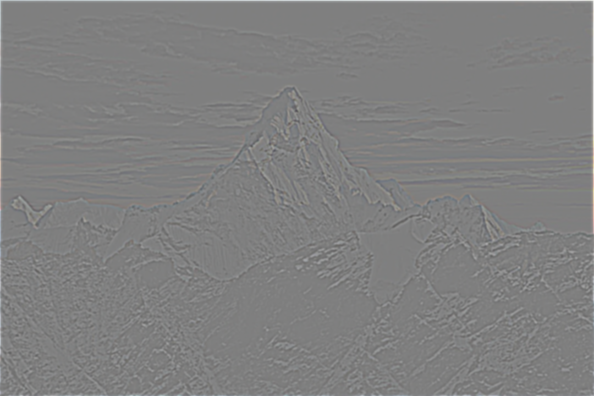
High frequencies Scaled by 5 and shifted by 0.5 for visibilitySharpened \(\alpha = 0.5\)
Sharpened \(\alpha = 1\)
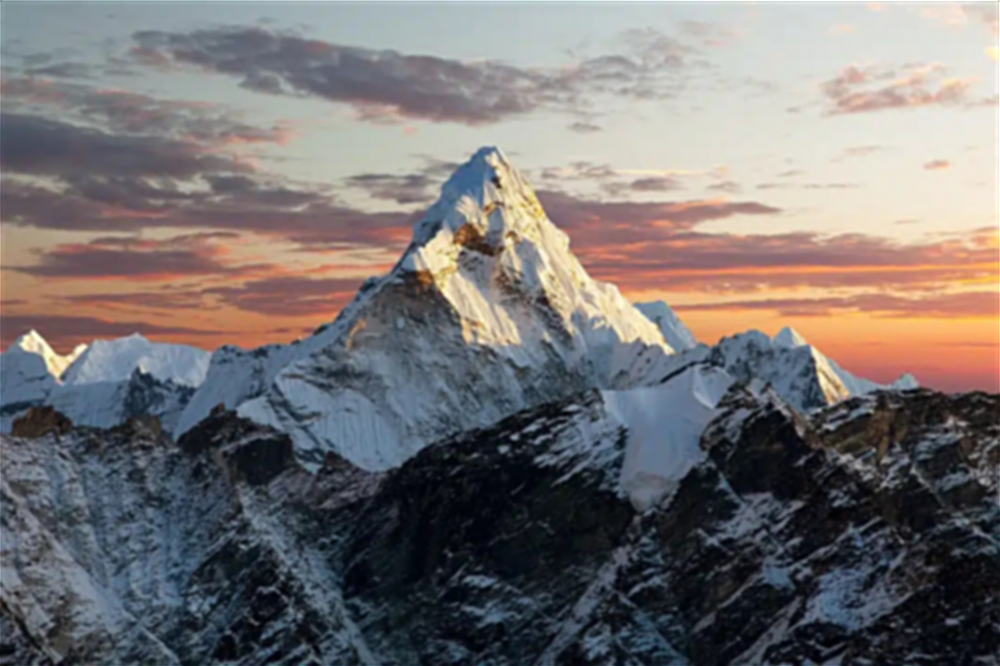
Sharpened \(\alpha = 5\)
Blur a sharp image, then sharpen it again
To evaluate the filter, I took a sharp photo, blurred it with a 13×13 Gaussian (\(\sigma = 2\)), and then sharpened the blurred version with the same filter as above.
Observations. Sharpening restores contrast along the ridge lines and the edges of the snow, and at \(\alpha = 5\) the peak looks much crisper than the blurred input. It does not bring back the fine detail of the original. The small ridges in the snow and the texture of the clouds were removed by the \(\sigma = 2\) blur, so there is not much left for the filter to amplify.
Part 2.2Hybrid Images
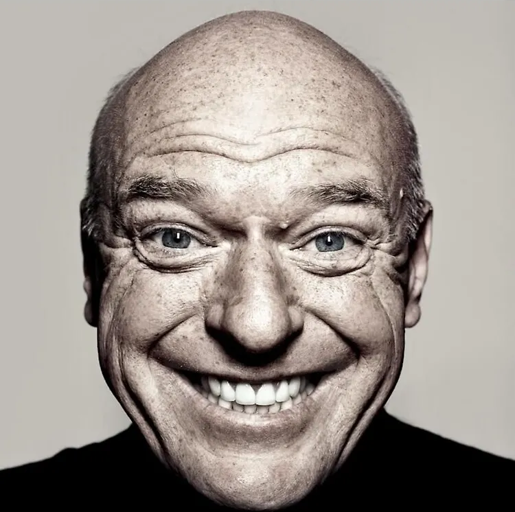
Smile Original
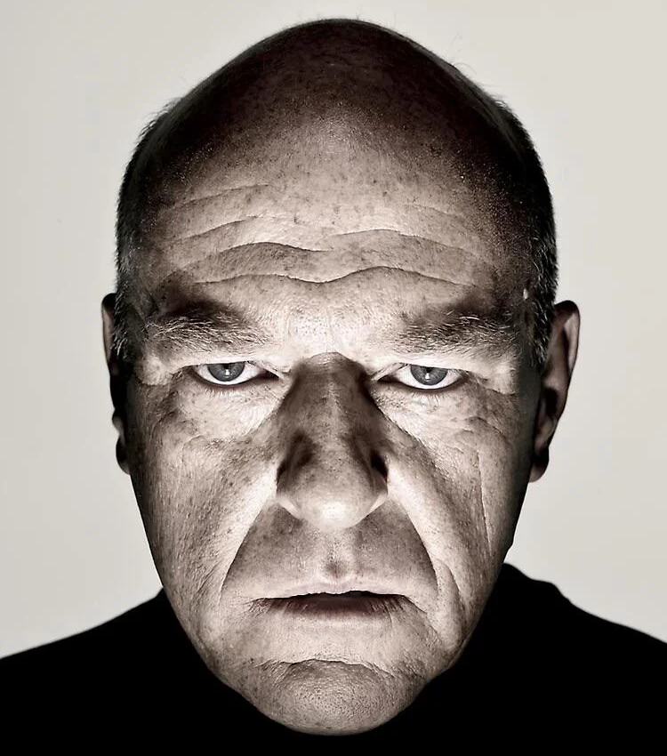
Frown Original
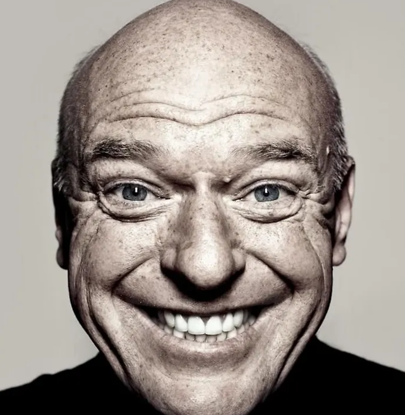
Smile AlignedFrown Aligned
A hybrid image adds the high frequencies of one image to the low frequencies of another. Up close, the high frequencies dominate and you see the first image. From far away (or when the image is small), only the low frequencies are visible and you see the second. I low-pass filtered with a Gaussian and high-pass filtered with the impulse minus a Gaussian:
Each Gaussian is \(2\lfloor 3\sigma \rfloor + 1\) pixels wide, so it covers \(\pm 3\sigma\), and the result is clipped to \([0, 1]\). Before filtering, I aligned each pair with the provided starter code, which uses two clicked points per image to match position, scale, and rotation. I added a step that crops out the black padding the alignment leaves at the edges.
Full process: Hank, smiling and frowning
This pair shows a change of expression. The smiling photo gives the high frequencies and the frowning photo gives the low frequencies.
The high-pass smile is shifted by 0.5 so zero is gray. Spectra are \(\log\lvert \mathcal{F} \rvert\) of the grayscale image, with zero frequency at the center.
Frequency analysis. The second row on the left shows the log magnitude of the Fourier transform of each image.
The low-pass spectrum keeps energy only near the center and is dark everywhere else. The high-pass spectrum has the center removed and keeps the outer frequencies. The hybrid's spectrum combines the two: the center comes from the frown and the outer region from the smile.
Cutoff frequency. I tried \(\sigma_1 \in \{1, 4, 8\}\) for the high-pass and \(\sigma_2 \in \{5, 7, 10\}\) for the low-pass, and chose \(\sigma_1 = 4\) and \(\sigma_2 = 7\) (outlined in blue).
With \(\sigma_1 = 1\), the high-pass keeps only the finest detail, so the smile is hard to see even up close and the frown dominates.
With \(\sigma_1 = 8\), the high-pass keeps the shape of the mouth and cheeks, so the smile is still visible from far away.
A larger \(\sigma_2\) blurs the frown more. At \(\sigma_2 = 10\) the frown is harder to recognize from a distance, and at \(\sigma_2 = 5\) it competes more with the smile up close.
\(\sigma_1 = 4\) and \(\sigma_2 = 7\) gave the clearest switch between the two expressions. The final hybrid is shown at two sizes to stand in for two viewing distances.
Nutmeg High frequenciesDerek Low frequencies
Hybrid Up close: NutmegHybrid Far away: Derek
Derek and Nutmeg
A morph between a person and a cat. Nutmeg gives the high frequencies (\(\sigma_1 = 9\)) and Derek gives the low frequencies (\(\sigma_2 = 11\)). The originals are at the top and the hybrid is below at two sizes.
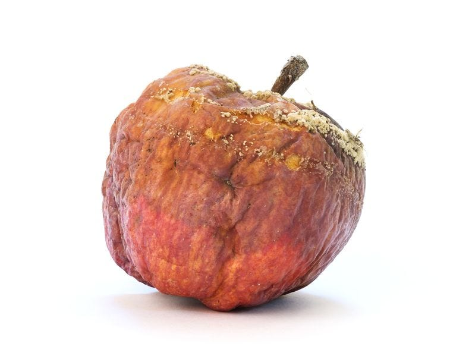
Rotten apple High frequencies
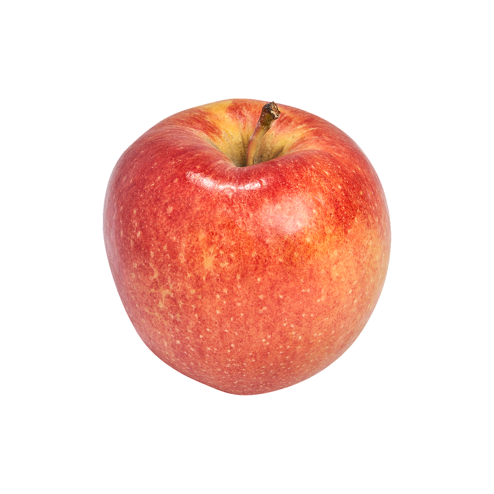
Fresh apple Low frequencies
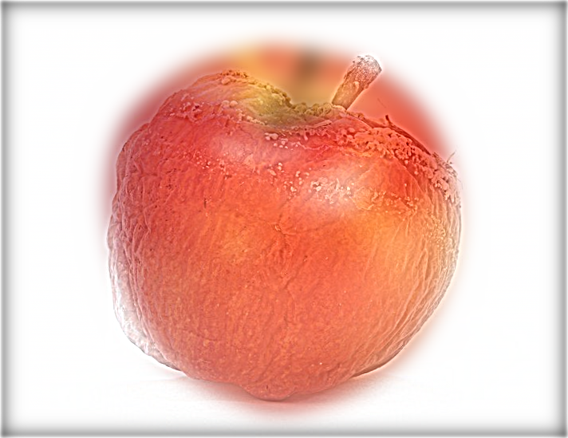
Hybrid Up close: rotten appleHybrid Far away: fresh apple
Rotten apple and fresh apple
A change over time. The rotten apple gives the high frequencies (\(\sigma_1 = 3\)) and the fresh apple gives the low frequencies (\(\sigma_2 = 12\)). Up close the wrinkled skin of the rotten apple shows; from far away the smooth red apple takes over. The originals are at the top and the hybrid is below at two sizes.
Part 2.2 · Bells and WhistlesUsing Color in Hybrid Images
Both in color bestHigh color, low grayHigh gray, low color bestBoth grayHank up close
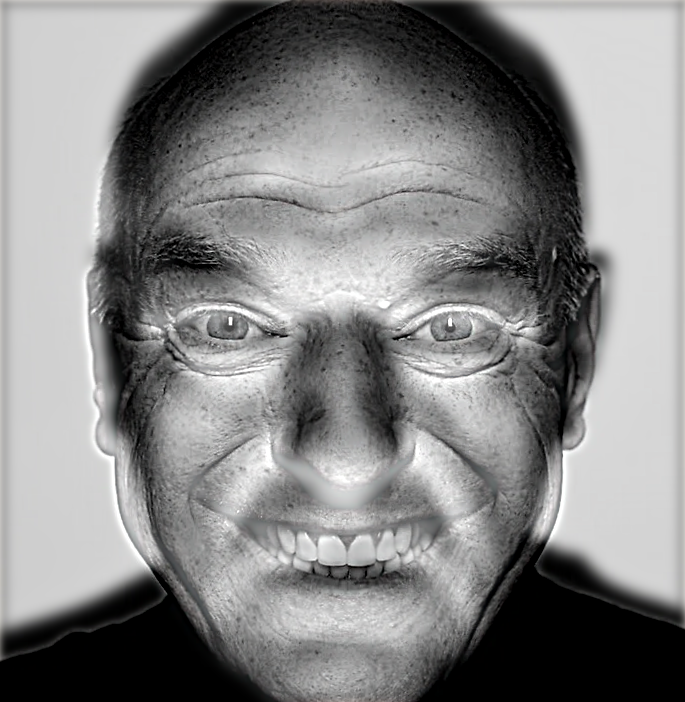
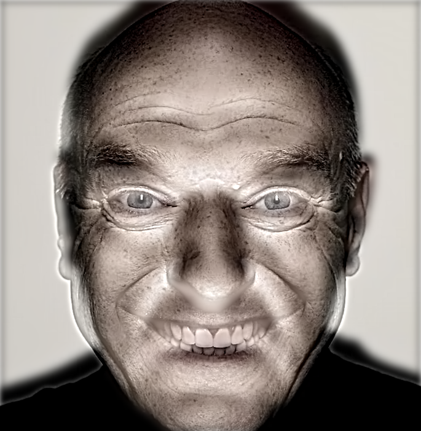
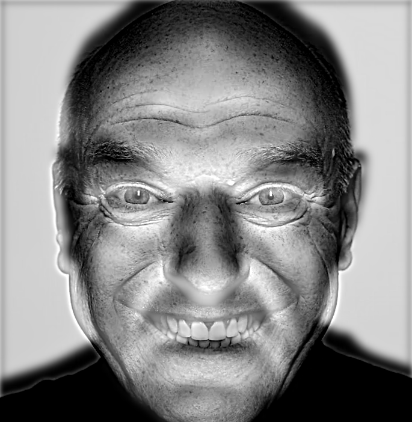
Far awayDerek and Nutmeg up close
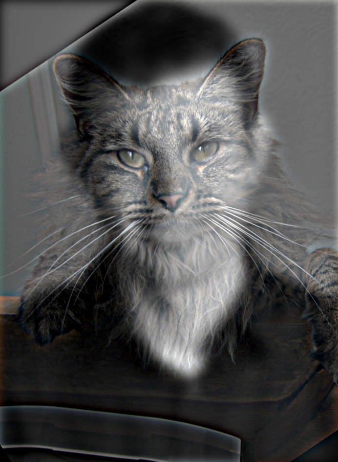
Far awayApples up closeFar away
For all three pairs, I made each hybrid four ways, with each component either in color or converted to grayscale before filtering. Each version is shown up close and at a small size to stand in for viewing from far away.
Color works best in the low-frequency component. Most of the color in a photo changes slowly across the image, so it lives in the low frequencies. The high-pass image is mostly brightness edges centered on zero, with very little color left in it. As a result, whether the high-frequency image is in color or gray barely changes the hybrid. The exception is Derek and Nutmeg: Nutmeg is strongly colored, so with color in the high component the cat's orange fur and yellow-green eyes show up close, which makes the cat easier to see.
Removing color from the low-frequency image changes the result much more: the hybrid loses Hank's skin tone, Derek's skin, and the red of the fresh apple. Color in the low component also makes the far-away image easier to recognize, since color is still visible at a distance where edges are not.
Best: color in the low frequencies (circled). Color in the low component is what matters. Color in the high component helps slightly when the high-frequency image is itself colorful, like Nutmeg, and otherwise makes no visible difference, so both circled versions look nearly the same.
Laplacian levels may have negative values, so they are rescaled to \([0, 1]\) for display.
A Gaussian stack blurs the image again at every level without downsampling, so every level is the same size as the input. Each level of the Laplacian stack is the difference between two neighboring Gaussian levels, which isolates one band of frequencies. The last Laplacian level is the last Gaussian level, so the Laplacian levels add back up to the original image exactly:
$$\mathcal{G}_0 = I, \qquad \mathcal{G}_{i+1} = \mathcal{G}_i * G_\sigma$$
$$\mathcal{L}_i = \mathcal{G}_i - \mathcal{G}_{i+1}\ \ (i < N - 1), \qquad \mathcal{L}_{N-1} = \mathcal{G}_{N-1}$$
$$\sum_{i=0}^{N-1} \mathcal{L}_i = I$$
I implemented both stacks from scratch with \(N = 6\) levels and a 25×25 Gaussian with \(\sigma = 4\) at every level. In the mask, white (1) keeps the apple and black (0) keeps the orange.
Apple × maskOrange × (1 − mask)BlendLevel 0(a)(b)(c)Level 2(d)(e)(f)Level 4(g)(h)(i)Sum(j)(k)(l)
Levels may have negative values, so they are rescaled to \([0, 1]\) for display.
Recreating Figure 3.42 (Szeliski)
Each row is one band. The left column is the apple's Laplacian level weighted by the mask's Gaussian level, the middle column is the orange's weighted by one minus the mask, and the right column is their sum.
The rows are levels 0, 2, and 4, and the last row adds up all six levels. Panel (l) is the finished oraple.
Part 2.4Multiresolution Blending
AppleOrangeMaskOraple
The mask \(M\) is 1 where image \(A\) should appear and 0 where image \(B\) should. I build a Gaussian stack of the mask and use each of its levels to mix the matching Laplacian levels of the two images, then add the blended levels back up:
The mask gets blurrier at each level, so each band is mixed over a transition that fits its scale. Low frequencies such as overall color and shading are mixed over a wide region, which hides the seam. Fine detail such as texture switches over a narrow region, which avoids ghosting. All blends use 6 levels and \(\sigma = 4\) for the image stacks. The mask stack uses \(\sigma = 4\) for the oraple and the sun, and \(\sigma = 12\) for the trees.
The oraple: vertical seam
The mask is a step function: 1 on the left half and 0 on the right.
FallSpring
MaskBlend
Fall and spring: diagonal seam
The same tree in two seasons, joined along the diagonal from the bottom-left corner to the top-right corner. The mask is 1 where \(x/w + y/h < 1\), so fall fills the top-left half.
The yellow and green halves differ strongly in color, and with a mask \(\sigma\) of 4 the diagonal still showed as a visible line. Raising the mask \(\sigma\) to 12 spreads the transition over a wider band, which hides the seam while the diagonal split still reads.
FriendSunMask
The original sun baby For comparisonMy result
My friend as the Teletubbies sun: irregular mask
The mask is an ellipse centered on the face. It stays flat in the middle and fades smoothly to 0.
I scaled the mask to a maximum of 0.65, so about a third of the sun still shows through the face and gives it the yellow glow of the original.
Levels may have negative values, so they are rescaled to \([0, 1]\) for display.
The process for my favorite result
The columns show the masked Laplacian stack of my friend, the masked Laplacian stack of the sun, and the blended stack. Levels 0 to 4 are differences between Gaussian levels and each hold one band of detail, while level 5 is the last Gaussian level itself, so it looks like a full blurred image.
The last row adds up each column: the first two are the masked input images and the third is the final blend.
Part 2.4 · Bells and WhistlesUsing Color in Blending
Without matchingSaturation matchedOrapleFall and springFriend and sun
Even with a smooth transition, a blend can still show a seam when one image is much more colorful than the other, because the duller side looks faded next to the brighter one. To fix this I matched saturation before blending:
Convert both images to HSV.
Compute the mean saturation of each image.
Multiply the saturation of the less saturated image by the ratio of the two means, and clip to \([0, 1]\).
Results. In the oraple, the boosted orange brings the two halves closer in color intensity. In the trees, the spring half becomes a deeper green that holds up next to the bright autumn yellow. In the sun, the boosted face has warmer skin tones that sit better inside the saturated cartoon sun.
Why saturation. I changed only saturation because it controls how vivid an image looks. I only raise the weaker image, so the more vivid image is left untouched. The tradeoff of using one scale per image is that pixels that are already highly saturated get clipped at 1.
TakeawayWhat I Learned
The most important thing I learned is that most of this project comes down to choosing which frequencies to keep. Edge detection, sharpening, hybrid images, and multiresolution blending all use the same Gaussian filter. What changes is whether a band of frequencies is kept, removed, amplified, or mixed with another image. Thinking in frequencies also explained results that surprised me at first, such as why sharpening a blurred photo cannot bring back its detail, and why a blend only looks smooth when each band is mixed over a transition that matches its scale.